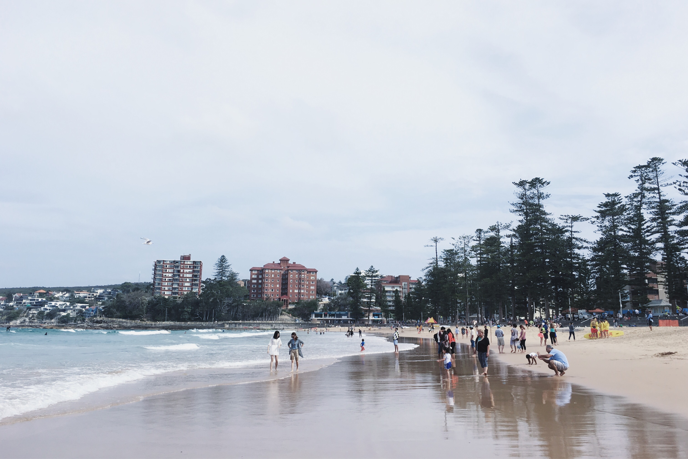
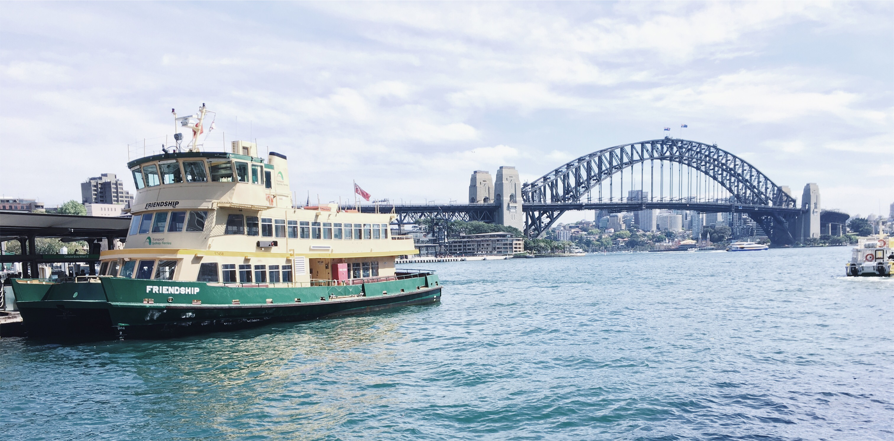
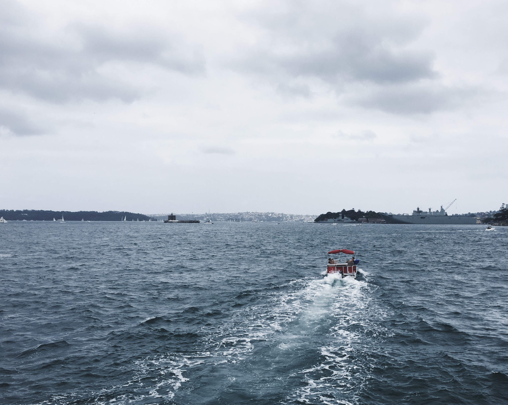

Manly Beach
Manly is a great alternative to the crowded Bondi Beach.
Manly Beach is located in the north of Sydney, being one of the northern beaches. It is surrounded with beautiful pine trees, and the views of the sea is very breathtaking. With its soft sand and great food, Manly is also one of Sydney's most famous beaches. It's also quite larger than Bondi Beach.
Aside from bus and driving, Manly is accessible by a 40-minute ferry from the Circular Quay. The ferry is a great way to view Sydney and its surroundings. The views are breathtaking, featuring Sydney's coasts, yachts and boats passing by, and also the Opera House from the sea.
External links: